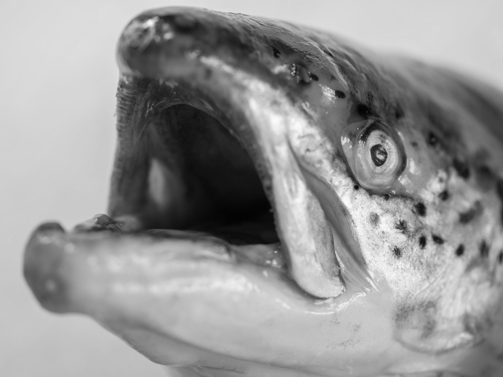

Here we highlight both in-house and outside partners' thoughts on different platforms.

Research note 26 October 2026 AI sea-lice control in Norwegian salmon farming Lasers and automated counts may loosen the one brake Norway uses on salmon farming. A prediction for 2027. Read the note
Effective Altruism
We apply theories of humanism and original thinking to on-demand research on AI safety, longtermism and sentient beings.
Ask about research on demand